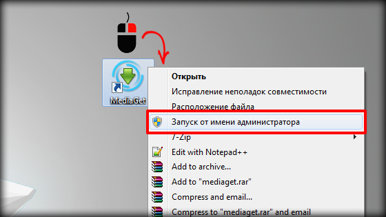
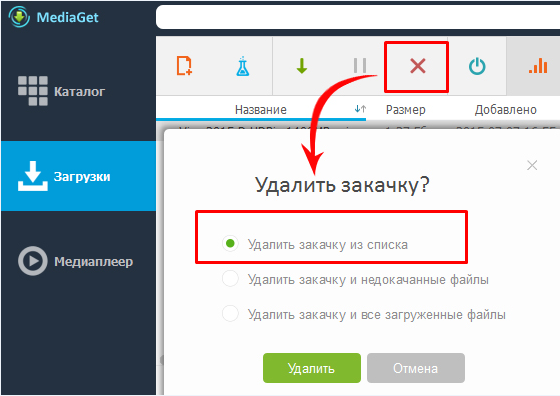
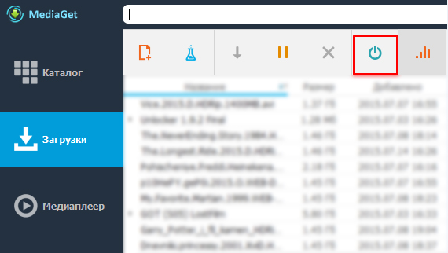
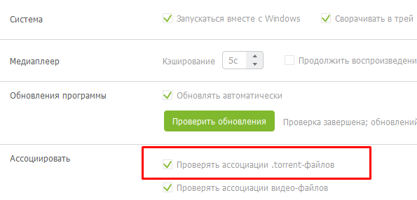
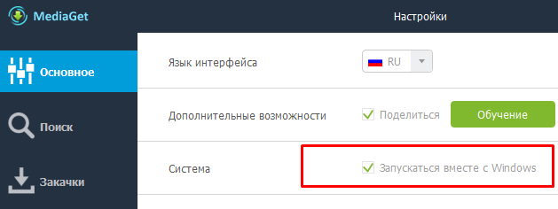

Общие вопросы о программе
Тут собраны все наиболее часто задаваемые вопросы пользователей
или выберите вопрос из списка:
-
Как скачать и установить MediaGet на мой компьютер? ВИДЕОИНСТРУКЦИЯ!
Начать пользоваться MediaGet очень просто! Нажмите сюда, чтобы скачать установочный файл программы и следуйте инструкциям установщика. Установка может занять несколько минут и по её завершении MediaGet запустится автоматически. Для удобства, пожалуйста, посмотрите этот видеоролик! -
Нужно ли как-то дополнительно настраивать MediaGet? ВИДЕОИНСТРУКЦИЯ!MediaGet по умолчанию устанавливается с оптимальными настройками, но, если вы желаете что-то изменить или выставить дополнительные настройки, вы можете сделать это. Посмотрите этот видеоролик, чтобы ознакомиться с настройками MediaGet.
-
Как устроен MediaGet? ВИДЕОИНСТРУКЦИЯ!MediaGet устроен просто и удобно. В этом видеоролике мы расскажем вам о том, какие вкладки и функции есть в MediaGet («Каталог», «Загрузки» и «Медиаплеер»).
-
Как искать и пользоваться каталогом в MediaGet? ВИДЕОИНСТРУКЦИЯ!
Поиск разбит на 5 категорий: игры, музыка, фильмы, программы, все. Для более точного поиска вам необходимо выбрать соответствующий раздел в программе. Если вы хотите найти кино, выберите раздел «Видео». Если вы не можете отнести файл к конкретному разделу, используйте раздел «Все».
Каталог в нашей программе - это сборник описаний и обложек фильмов, игр, программ. Файлы, представленные в нем, не размещаются на серверах MediaGet, поэтому каталог является только лишь библиотекой описаний. Найдя интересующий вас файл в каталоге, вы сможете начать его загрузку или перейти к просмотру.
-
Как скачать и запустить фильм, игру, программу или прослушивание музыки? ВИДЕОИНСТРУКЦИЯ!
В этом видеоролике мы расскажем вам о том, как скачать файл из нашего каталога, с какого-либо вэб-сайта и запустить его просмотр (для фильмов) или прослушивание (для музыки).Если вы скачали фильм и он не воспроизводится, зачастую необходимо установить пакета видеокодеков. Подробнее об этом вы сможете узнать здесь.Если вы при воспроизведении фильма отсутствует звук, рекомендуем проверить, не отключена ли у видео звуковая дорожка, нажав правой кнопкой мыши на изображение. Если выбора звуковых дорожек нет,попробуйте открыть файл в другом плеере.Если при этом звук не появится, проверьте, воспроизводит ли компьютер какие-либо звуки, чтобы убедиться, что драйвера на звуковую карту корректно установлены, колонки включены и системная громкость (её значек находится справа внизу рабочего стола Windows возле часов) не скручена на ноль. Если с другие файлы воспроизводятся со звуком, скачайте другую раздачу этого фильма, так как скачанный вами файл, вероятно, поврежден.Для установки загруженной игры в большинстве случаев необходимо иметь установленный эмулятор дисков. Подробнее о том, что такое эмулятор дисков, вы сможете узнать здесь.
Если вы скачали программу, вы можете начать её установку, запустив установочный файл с расширением .exe.
-
Не могу скачать (определяет как потенциально опасное ПО, вирус, угрозу, троян и тд.). Не могу установить (вместо окна установщика - «белый лист»).
Мы гарантируем, что MediaGet не содержит каких-либо вирусов, «червей», «троянов» и любой другой вредоносный код, если вы скачаете его с нашего официального сайта. Некоторые антивирусы (например, NOD 32, Касперский, DrWeb и др.) могут определять MediaGet, как «потенциально нежелательное программное обеспечение», но, как правило, это поведение антивирусов объясняется тем, что любой подобный клиент может быть использован для скачивания вирусов из сети Интернет. Мы работаем только с проверенными трекерами, чтобы снизить риск заражения компьютеров пользователей, но рекомендуем вам скачивать файлы только с проверенных сайтов.
Все, что вам необходимо сделать для избавления от ложных срабатываний и проблем при установке клиента, это добавить MediaGet в список исключений вашего антивируса. Если вы не можете сделать это самостоятельно, пожалуйста, напишите нам или воспользуйтесь инструкцией на нашем форуме. На данный момент доступны инструкции для следующих антивирусов: Avast Free Antivirus, AVG AntivirusFree, Avira Free Antivirus, Comodo Internet Security, Dr. Web, Eset Nod32, Kaspersky Internet Security, McAfee, Microsoft Security Essentials, Norton 360, Trend Micro Titanium, ZoneAlarm. Если инструкции для вашего антивируса нет, пожалуйста, напишите нам, чтобы мы разместили ее.
Если вы успешно устранили проблему ложного срабатывания антивируса, но по-прежнему видите «белый лист», это означает, что стандартный браузер Internet Explorer неправильно рендерит (визуализирует) html - страницы. Рекомендуем скачать последнюю версию этого браузера и установить. После чего повторно запустить установщик MediaGet. -
Загрузка файла не начинается, либо скорость скачивания низкая. Что делать?Причиной низкой скорости могут стать различные факторы:
- 1. Скорость вашего Интернет-соединения. Вы не можете качать быстрее, чем позволяет ваш тариф и оператор (провайдер). При этом необходимо помнить: операторы обычно указывают скорость соединения в мегабитах в секунду (например, 20 Мб\сек.), тогда, как скорость скачивания измеряется в мегабайтах в секунду. В одном байте 8 (восемь) бит, поэтому фактическая скорость скачивания файла при скорости подключения в 20 Мб\сек. будет минимум в 8 раз ниже (примерно 2.5 Мб\сек.). Иногда скорость скачивания опускается ещё ниже из-за других внешних факторов (помехи, особенности раздачи и др.).
- 2. Мобильный провайдер блокирует возможность скачивания торрент файлов. При использовании мобильного интернета некоторые провайдеры (Megafon, Yota и др.) ограничивают или блокируют возможность загрузки файлов по протоколу .torrent. Для уточнения этого нюанса вам необходимо обратиться в службу поддержки вашего мобильного интернет-провайдера. Так же,обращаем ваше внимание,что скорость скачивания файлов может снизиться,если вы вышли за рамки трафика,предусмотренного вашим тарифным планом.
- 3. Количество «сидеров» (людей, раздающих данный файл). Некоторые файлы, которые можно скачать с помощью MediaGet, не имеют раздающих, т.е. вам не с кого его скачивать. Это является особенностью сетей p2p. Вариантов решения проблемы несколько:
- - Поискать другой файл с тем же названием, но с наличием сидеров;
- - Подождать, пока раздающие появятся в сети и дадут вам скачать нужный файл;
- - Попросить «встать на раздачу», т.е. обратиться к тем людям, кто уже скачал данный файл, чтоб они вернулись на раздачу, что даст возможность скачать файл остальным.
- 4. Достигнуто предельное количество соединений. Для решения данной проблемы зайдите в «Настройки» → «Соединения» и напротив порта входящих соединений нажмите кнопку «Случайно». Эта функция сменит порт и у вас возобновится закачка. Если это не помогло, зайдите сюда.
-
Не могу найти файл (нет результатов поиска)Если вы не смогли найти желаемый файл сразу, согласитесь с предложением (которое вы увидите во всплывающем окне) поискать его на всех серверах. Проверьте, правильно ли вы указываете название файла, не вводите ли сторонние символы.Обратите внимание на то, какие трекеры выбраны в настройках программы в разделе "поиск". Иногда бывают случаи, когда тот или иной трекер становится недоступен, поэтому попробуйте выбрать все и повторить поиск.Убедитесь в том, что ваш антивирус не блокирует работу MediaGet. При необходимости добавьте программу в исключения антивируса.
Если вы испробовали все предложенные варианты решения проблемы, но найти файл по-прежнему не удалось, очевидно, этот файл уникальный и на указанных трекерах его нет, поэтому вы можете повторить поиск позднее. -
При попытке установить/открыть MediaGet появилась ошибка "windows не удается получить доступ к указанному устройству, пути или файлу..."
Эта системная ошибка вызвана неисправностью или несоответствием при работе Windows. Она появляется в следующих случаях:
1. У вас нет разрешений для запуска файла. Чтобы проверьте наличие разрешения на открытие файла, кликните правой кнопкой мыши по установочному файлу и зайдите в его "Свойства". Во вкладке "Безопасность" в поле "Группы и пользователи" выделите имя своего компьютера, чтобы увидеть свои разрешения. Нажмите кнопку "Изменить" и установите флажки для всех разрешений;
2. Установочный файл находится в месте, которое в данный момент недоступно (сетевая папка или внешний диск, который не подключен к ПК). Проверьте, куда именно был скачан установочный файл MediaGet. Попробуйте скачать его прямо на рабочий стол и запустить с него;
3. Установочный файл был перемещен или удален. Перейдите к расположению установочного файла и убедитесь, что файл находится в этой папке;
4. Установочный файл поврежден. Убедитесь, что файл был скачан с нашего официального сайта (вы сейчас как раз на нем) и загрузка была завершена полностью;
5. Установочный файл блокируется Windows. Откройте свойства файла и перейдите во вкладку "Общие". Если вы увидите ссылку с предложением о разблокировке, нажмите "Разблокировать";
6. Ваш антивирус может блокировать файл. Это ложное срабатывание антивируса. Просто добавьте установочный файл MediaGet в его исключения. Для удобства воспользуйтесь соответствующей инструкцией на нашем форуме. -
Скорость падает до минимума когда закачка доходит до конца. Почему?Это может быть связано с особенностью работы клиента MediaGet (и аналогичных программ). Файл разбивается на отдельные части, которые вы получаете от разных пользователей. Если какой-то определенной части нет у быстрого источника или источник с этой частью временно не может передавать файл, у вас возникает провал в скорости. Можем порекомендовать перезапустить программу («Меню» → «Выход», снова запустить). Если после этого не произошло изменений, необходимо ждать возобновления раздачи недостающей части файла. Если этого не происходит длительное время, то рекомендуем скачать другую раздачу, воспользовавшись нашим поиском. Выберите файл, имеющий наибольшее количество источников (в нашей программе такие файлы отмечены тремя звездами).
-
В процессе установки появляется сообщение "ошибка при закачке установочных файлов (код winnet...)", "прекращена работа программы MediaGet installer". Что делать?Данная проблема вызвана некорректной настройкой браузера Internet Explorer на вашем компьютере. Даже если вы пользуетесь другим браузером, для устранения проблемы вам необходимо сделать следующее:
- - отключить в Internet Explorer режим «Работать автономно» (для этого запустите IE, щелкните правой кнопкой мыши по серому пространству вверху и в появившемся меню выберите пункт «Командная строка». Далее, в появившейся строке во вкладке «Сервис» снимите галочку напротив строки «Работать автономно»);
- - выйти из IE и открыть его снова, чтобы проверить наличие этой галочки;
- - закрыть IE и открыть диспетчер задач, чтобы убедиться, что установщик MediaGet еще не запущен;
- - запустить установщик MediaGet.
-
Требует пароль от rutracker.org. Так и должно быть?rutracker.org - это закрытый трекер, который позволяет использовать свои возможности только авторизованным пользователям. При необходимости пройдите регистрацию на самом сайте трекера. Не бойтесь, мы не можем перехватить ваши регистрационные данные и передать их в сторону третьих лиц, только на сам трекер для авторизации.Если вы уже зарегистрированы на rutracker.org, но при поиске файлов видите окно для ввода логина и пароля, пожалуйста, убедитесь, что сайт rutracker.org не открыт в вашем браузере. Если открыт - закройте его и укажите в окне поиска реквизиты для входа снова, затем повторите поиск.
-
При скачивании файла выдает ошибку «невозможно создать каталог».Попробуйте перезапустить приложение от имени администратора (закройте клиент MediaGet, кликните правой кнопкой мыши по значку MediaGet и в появившемся меню выберите опцию «Запуск от имени администратора»).
-
При включенном MediaGet, страницы в браузере загружаются очень медленно, хотя моя скорость интернета достаточно высокая. Что делать?Скорее всего, у вас превышен лимит полуоткрытых соединений. Для решения этой проблемы, необходимо скачать и установить специальный бесплатный патч.
Более подробную информацию об этом вы сможете найти на нашем сайте здесь. -
Как скачать файл, но не раздавать его?После скачивания файла на вкладке «Загрузки» кликните правой кнопкой мыши по файлу и нажмите «Удалить» → «Удалить закачку из списка», либо после закачки файла нажмите кнопку «Приостановить», чтобы файл не раздавался, но остался в списке загрузок.
-
Как восстановить закачку после удаления из списка загрузок?Начните скачивать этот файл заново. Программа сама найдет недокачанный файл и продолжит загрузку. Также вы можете поискать ранее скачанный файл во временных файлах или загрузках браузера и открыть его.
-
Я поставил файлы на загрузку и хочу, чтобы компьютер выключился по окончании загрузки. Как мне это сделать?

Нажмите правой кнопкой мыши по значку MediaGet в правом нижнем углу вашего экрана (в трее), в появившемся меню выберите раздел «Выключение ПК» и активируйте соответствующий пункт.
-
Я заметил, что иногда скорость скачивания через браузер выше, чем через MediaGet. Почему?Возможно, дело в том, что сервер, который отдает вам файл через браузер, способен держать соединение до вашего компьютера на скорости выше чем, компьютер пользователя, который отдает вам файл через MediaGet. Попробуйте скачать файл с бóльшим количеством источников или, если проблема постоянна, зайдите сюда.
-
Внезапно прекратилось скачивание файла. Что делать?Пожалуйста, проверьте ваше Интернет-соединение. Если другие программы (ICQ, Skype, браузер) работают, проверьте графу С/П (сиды/пиры) во вкладке «Загрузки» в клиенте MediaGet. Если там отсутствуют сиды, файл некому раздавать. Дождитесь появления раздающих или воспользуйтесь поиском, чтобы найти другую раздачу.
-
Программа не позволяет скачать файл большого размера. Почему?
Убедитесь, что диск, на котором установлена программа, форматирован в файловую систему NTFS (нельзя сделать в 95/98/ME). FAT32 не поддерживает файлы размером 4Гб и более.
Для того, чтобы переформатировать файловую систему в NTFS необходима операционная система Windows 2000, XP и выше.
Пожалуйста, пользуйтесь следующей инструкцией:- - нажмите кнопку «Пуск» в левом нижнем углу экрана
- - перейдите в меню «Выполнить»
- - наберите команду cmd
- - в командной строке наберите convert буква_диска/fs:ntfs (для диска C: это будет выглядеть так convert c: /fs:ntfs , для D: - convert d: /fs:ntfs и т.д...)
- - далее программа спросит имя тома; введите название того диска, который хотите переформатировать, посмотреть его можно, зайдя в «Мой Компьютер»
- - перезагрузитесь, если этого потребует программа
-
MediaGet слишком сильно нагружает систему, хотя мой компьютер довольно мощный. Как уменьшить потребление системных ресурсов?
Мы рекомендуем всегда пользоваться самой последней версией MediaGet, т.к. в ней исправлены все выявленные на данный момент ошибки и она отличается максимальной стабильностью. Самую свежую версию программы всегда можно скачать с нашего официального сайта.
Если после обновления проблема сохраняется, вы можете обратиться к нам через форму обратной связи и мы постараемся вам помочь. -
При нажатии на ссылку с файлом запускается другая программа. Как это исправить?Если ранее вы использовали по умолчанию другой клиент для загрузки файлов, вам необходимо в настройках клиента MediaGet поставить галочку напротив строки «Проверять ассоциации .torrent-файлов». После этого необходимо перезапустить MediaGet и браузер.
-
Как удалить программу с моего компьютера?
Удаление программы происходит стандартным образом: «Пуск» → «Все программы» → «MediaGet» → «Удалить MediaGet».
Либо следующий путь: «Пуск» → «Панель управления» → «Установка и удаление программ» → «Удалить MediaGet».
Удаление ярлыка MediaGet с рабочего стола не удалит саму программу. Также, не рекомендуем удалять программу удалением папки «MediaGet» из папки «Program Files». Такой способ не удалит программу полностью. Единственным правильным способом удаления программы MediaGet является способ, описанный выше.
В предыдущих версиях программы допускались случаи, когда MediaGet оставался в процессах, выполняемых на ПК. Для удаления программы из процессов необходимо открыть диспетчер задач сочетанием клавиш ctrl+alt+delete, во вкладке «Процессы» найти MEDIAGET.EXE и нажать «Завершить процесс». Далее удалить саму программу способом, описанным выше. -
Вместе с MediaGet устанавливаются какие-то дополнительные программы, тулбары и пр. Мне они не нужны. Как их не устанавливать?Установка данных программ помогает MediaGet оставаться бесплатным, но она не является обязательной. Просто внимательно читайте то, что написано в диалоговых окнах при установке MediaGet и снимайте галочки напротив тех дополнительных программ, которые не хотите устанавливать. Удалить эти дополнительные программы можно либо через меню расширений браузера, либо через удаление программ Windows.
-
MediaGet (не)запускается вместе с системой, как мне это (включить) отключить?

Для того что бы включить/отключить автозагрузку MediaGet зайдите в «Настройки» программы и поставьте/снимите галочку напротив строки «Запускаться вместе с Windows».
-
Я опасаюсь за свои личные данные. Ваша программа их не ворует?Все действия нашей программы лежат на поверхности, вы сами можете их отследить. Мы не собираем, не сохраняем и не отправляем в сторону третьих лиц личные данные пользователей, хранящиеся на компьютерах. Нам это не нужно. Число пользователей MediaGet уже превысило 100 млн. человек и подобные действия с нашей стороны давно бы уже стали известны. Не волнуйтесь, все безопасно!
-
Я часто вижу рекламу вашей программы. Почему вас везде рекламируют?Одно из направлений нашей работы - это помощь начинающим пользователям сети Интернет в получении файлов на свой компьютер. К нам присоединяется большое количество сайтов-партнеров, которые дают возможность получить желаемый контент с помощью нашей программы. Попробовав нас, большинство пользователей начинает пользоваться только нашими средствами скачивания файлов и использовать те сайты, на которых установлены наши баннеры, это удобно!
-
При открытии программы, окно MediaGet полностью белое. Что делать?Возможно, дело в том, что в момент запуска программы отсутствовал интернет. Попробуйте кликнуть правой кнопкой мыши по иконке трея и там нажмите на "Показать/Скрыть MediaGet".
-
При просмотре онлайн сериала возникает ошибка "Серия временно недоступна. Ошибка...". Что это значит?
Эта ошибка означает, что сериал в настоящий момент недоступен для просмотра онлайн. Мы можем порекомендовать вам выбрать другой перевод (если он доступен для этого сериала) или найти сериал с помощью встроенного поиска MediaGet и скачать его.